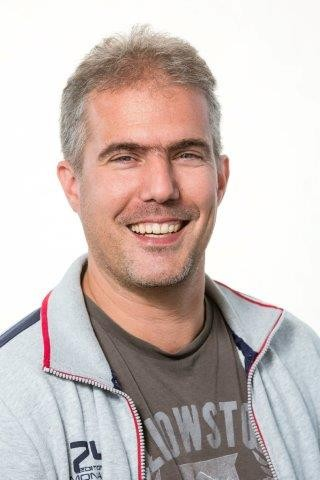

Overview
Acceleration of offshore wind is central to Europe’s climate-neutrality goal for 2050. Multi-terminal HVDC systems can interconnect Member States and wind farms cost-effectively, but today’s HVDC systems from different suppliers are not interoperable: a converter from vendor A cannot simply connect to a station from vendor B because of proprietary specifications and standards.
Project description
InterOPERA proposes a coordinated approach across industry and academia to achieve multi-terminal, multi-vendor, multi-purpose HVDC systems with grid-forming control. The project develops functional and technical integration frameworks, a real-time physical demonstrator, guidance for coordinated European grid architecture and planning, and pathways for multi-vendor procurement.
After defining minimum requirements for standardised interaction studies and interfaces, a demonstrator is built from models of different vendors. Offline and real-time simulations investigate component interactions; minimum requirements for control and protection cubicles are defined, including ancillary services. Outcomes support a stepwise verification process for new vendors and harmonised recommendations for European connection network codes.
Objectives & deliverables
- Functional, technical integration and validation frameworks for modular, interoperable control and protection
- Real-time physical demonstrator of multi-vendor multi-terminal HVDC with grid-forming capability
- Guidance for coordinated European HVDC grid architecture and topology
- Procurement pathways for multi-vendor HVDC projects and offshore energy development
Partners
TSOs (TenneT NL/DE, RTE, Amprion, Energinet, 50Hertz, Terna, Statnett); HVDC vendors (Siemens Energy, Hitachi Energy); DC breaker manufacturers (SCiBreak); wind partners (GE, Ørsted, Vestas, Siemens Gamesa, Equinor); associations (SuperGrid, T&D Europe, WindEurope, Vattenfall); academia (TU Delft, University of Groningen).
TU Delft role
TU Delft co-leads academic contributions, including offline and real-time SIL/HIL interaction studies of the multi-vendor demonstrator in PSCAD/EMTDC and RSCAD/RTDS, supporting future multi-vendor HVDC grid projects.
Team on this project

Rohan Kamat Tarcar
PhD researcher

Dr. Arjita Pal
Postdoctoral researcher

Dr. Dipl.-Ing. Aleksandra Lekić
Associate Professor · Group lead

Dr. Farzad Dehghan Marvasti
Postdoctoral researcher (alumni)

Dr. Reza Bakhshi-Jafarabadi
Postdoctoral researcher (alumni)

Dr. Ajay Shetgaonkar
PhD graduate · Postdoc alumni

Prof. Dr. Marjan Popov
Professor · collaborator

Remko Koornneef
Laboratory engineer · collaborator